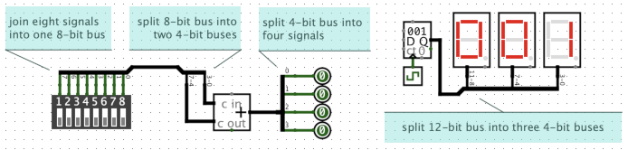
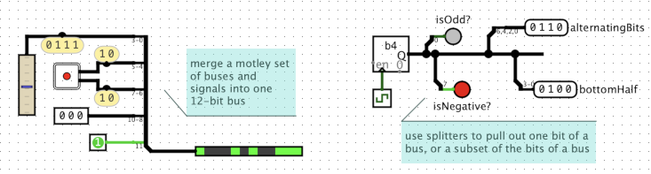
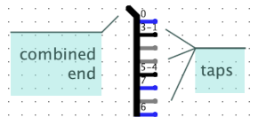

Found in Wiring Library

The Split/Join Signals component, or Splitter for short, is used to join or split signals and buses. A splitter is very flexible in how it can be used:
Split a bus: It can split a single n-bit bus into n individual 1-bit signals.
Join signals: It can do the opposite, joining n individual 1-bit signals, into a single n-bit bus.
Merge or partition equal-sized buses: It can split an 12-bit bus into three 4-bit buses, or four 3-bit buses, or two 6-bit buses, or other similar combinations, or do the opposite, merging multiple smaller buses into one larger bus.
Merge or re-partition unequal-sized buses and signals: You can mix and match different width buses. For example, it can merge a 4-bit bus, two 2-bit buses, a 3-bit bus, and a 1-bit wire, all together to form a single 12-bit bus, or it can do the the opposite, splitting the 12-bit bus into smaller unequal sized buses and signals.
Pull signals out of a bus: A common use case is "tapping" into a bus to pull out one or more bits. Given an 8-bit bus, a splitter can be used to extract just bit number 7 (the left, most significant bit), or just bit number 0 (the right, least significant bit), or just bits 3, 2, 1, and 0 (the bottom half), or any other combination of bits.

Each splitter has a combined end, and one or more taps. The Fan Out property controls how many taps there are. Taps are numbered 1 to M. The Combined Bit Width property controls the width of combined end, and also controls how many bits are available for the taps. Bits are numbrered 0 to N-1. Other properties allow you to assign each bit (0 to N-1) from the combined end to one of the taps (1 to M). Or, you can select "None" for a bit to indicate that bit isn't used by any of the taps.

In the image at right, there are 8 bits and 8 taps. Tap 1, at the top, carries bit 0. Tap 2, second from the top, carries bits 3, 2, and 1. The next two taps carry no bits. Bit 6 is carried by the bottom-most tap, Tap 8. The numbers drawn next to each tap show which bits are carried by that tap.Note: Each bit can only be assigned to one tap. So the combined end has "all the bits" in the splitter (all 8 bits in the image at right). And the taps, taken together, can't have duplicate copies of any of those bits. In other words, each bit number drawn on the symbol can only appear at most once. But there is no requirement that the taps, taken together, cover all the bits: there can be bits "missing" from the taps. And some taps can be empty, carrying no signals at all, if you want. These are shown in gray.
Tip: The combined end, and the taps, have no specific direction. In fact, you can mix and match directions freely, even within the same splitter or the same port of a splitter. You can arrange for some signals to flow into certain taps (or parts of a tap) and out (part of) the combined end, while having other signals flowing into (other parts of) the combined end and out of other (or other parts of) some taps.
Logisim's simulation engine treats splitters specially when propagating values within a circuit. Unlike all other components, splitters have no "delay" or direction. Essentially, the simulator internally decomposes all buses and splitters into an equivalent arrangement of individual 1-bit wires.
Note: The term splitter is a non-standard term, unique to Logisim as far as I know. I am unaware of any standard term for such a concept. Sometimes they are called a "breakout harness", "bus breakout", or just "breakout". In automotive wiring, and some other electronics, it might be called a "wiring harness" or "cable harness", though a wiring harness often has taps scattered along its length and might have more than one connectors at each end, rather than a single distinct "combined end".
The direction the taps are pointing.
The number of taps.
The bit width of the combined end.
Supports different ways of depicting the splitter in the circuit. If a splitter is facing East, then:
Controls how far apart the tap pins are placed.
Controls which tap bit x is connected to, or can be set to "None" if bit x is not to be used by the taps. Taps are numbered start from 1 at the top (for a splitter facing east or west) or from 1 at the left/west (for a splitter facing north or south). Note: There is no way for a bit to be connected to multiple taps.
As a convenience, the popup menu for a splitter can be used to reset all of the Bit x properties simultaneously. Right click (or Control-Click) a splitter to bring up the popup menu. Choose Distribute Ascending to distribute the bits so that each tap receives the same number of bits, starting from tap 1. (If the number of taps doesn't divide exactly into the number of bits, then the bits are distributed as evenly as possible.) Choose Distribute Descending to do the same, but starting from the highest-numbered tap.
None - splitters do not respond to being poked.
Supports VHDL and Verilog synthesis.